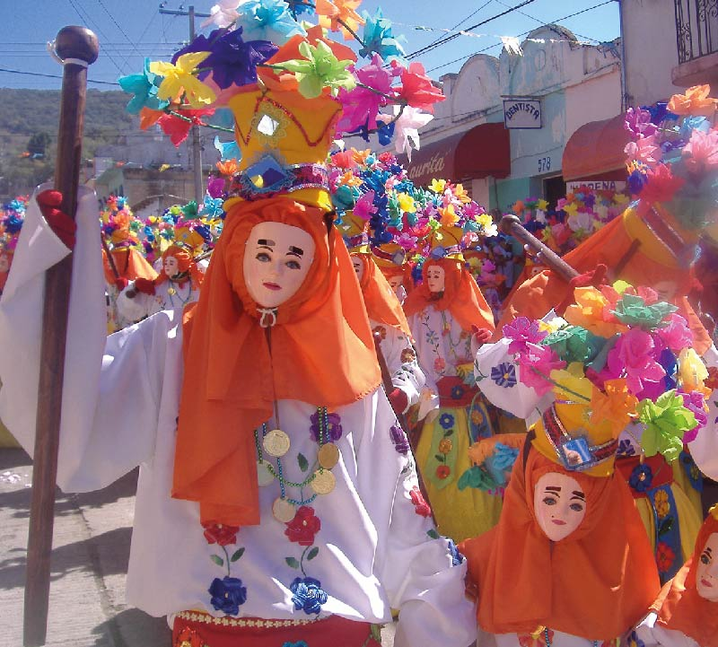

- Costumbres Comunes en Chiapas -
Chiapas es un estado rico en tradiciones que reflejan la diversidad cultural de sus pueblos indígenas y mestizos. Las festividades religiosas, como la Semana Santa y la celebración de la Virgen de Guadalupe, se viven con gran fervor y colorido, mezclando ritos católicos con costumbres ancestrales.
Destacan también las fiestas patronales en cada comunidad, donde se realizan danzas típicas como el “Palo Volador” y “Los Parachicos”, acompañadas de música tradicional, trajes regionales y comida típica. La artesanía es otro aspecto importante de las tradiciones chiapanecas, con tejidos, cerámica y máscaras elaboradas a mano que cuentan historias y leyendas de la región. Estas tradiciones no solo mantienen viva la identidad cultural, sino que también atraen a turistas que buscan conocer la riqueza ancestral de Chiapas.